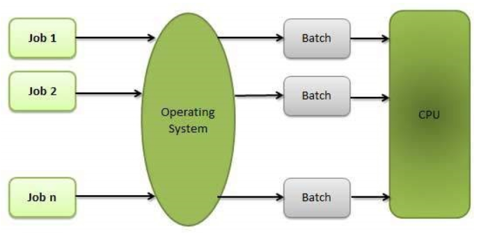

What is an OS?
A program that acts as an intermediary between a user of a computer and the computer hardware
What OS do?
It depends on the point of view - User, System
- OS is a resource allocator
- Manages all resources
- Decides between conflicting requests for efficient and fair resource use
- OS is a control program
- Controls execution of programs to prevent errors and improper use of the computer
OS Structure
- Monolithic
- Entire OS resides in the main memory.
- Most work is done via System Calls(It generates an interrupt and the executing program is suspended, control is transferred to the OS. Program continues when the system call service completes).


- Layred
- Entire OS is devided into number of layers(levels), providing different functionalities.
- A layer can only use the services provided by layer in a level below


- Microkernel OS
- Moves as much functionality as possible from user space into kernal space.
- Only few essential functions resides in the kernal
- Communication takes place between user modules using message passing.
- Virtual Machines
- It takes layred and microkernal approach to its logical conclusion.
- It treats hardware and the OS kernal as though they were all hardware.
- The OS host creates the illusion that a process has its own processor and (virtual memory).Each guest is provided with a (virtual)copy of underlying computer.
Types of OS?
- Batch Processing OS
- Its a technique in which OS collects the program and data together in a batchbefore processing starts.
- The OS defines a job which has predefined sequence commands, programs and data as a single unit.
- The OS keeps a number of similar jobs in a memory and executes them without any manual intervention
- Jobs are processed in the order of submission
- When a job is complete , its memory is released for next job

- Multiprogramming OS
- Its a technique to execute number of programs simultaneously by a single processor.
- Number of processes reside in the main memory at a time.
- The OS picks and begins to execute one of the jobs in the main memory
- If any I/O wait happened in a process, then CPU switches from that job to another job. Hence CPU is not Idle at any time


- Multitasking OS
- Its similar to multiprogramming.
- Here the working is done by context switching and time sharing technique.
- Each program is given a time quanta to execute and when this quanta is finished immediately context switching occurs and CPU start execution of next process.

- Here due to time quanta an illusion is created that multiple tasks are simultaneously executed but in real only one task is been executed at a time
-
- Multithreading OS
- Here a single program divides into sub programs & a thread is alloted to them for processing
- Thread can be considered as child processes that share the parent process resources but executes independently.

- While working with one program on our system we lauch another program a new thread is created for the program we lanunched the for the program we were interacting with previously.
- MultiProcessing OS
- It uses more than one processor in a single computer system to execute multiple programs.
- Here each process can be assigned to a different processor for its execution

- Distributed OS
- It's a software over a collection of independent,networked, communicating, and physically seperate computational nodes.
- They handle jobs which are serviced by multiple CPU's

- Network OS
- It runs on a server.
- It provides capability to manage users, data groups and other networking stuffs.
- It allow shared access of files, printers, security and other networking functions over a small private network.

- Real-time OS
- It is used when there are time requirements are vey strict like missile systems,air traffic control system, robots etc.